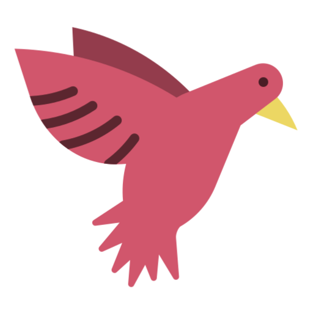

Ich bin Simon
ein angehender Softwareentwickler.

Ich heiße Simon und bin 18 Jahre alt.
Zurzeit besuche ich die 13. Klasse eines beruflichen Gymnasiums.
Nach dem Abitur möchte ich gern Informatik studieren.
Mein Ziel ist es, Software-Entwickler zu werden.

Seit 2018 will ich Informatik studieren.
An meiner Schule belege ich deshalb den Leistungskurs Informatiksysteme.
Beschäftigt habe ich mich vordergründig mit prozeduraler und objektorientierter Programmierung.
Meine Programmiersprachen sind C#, Python, SQL, HTML und CSS.

Seit mehr als zehn Jahren spiele ich Klavier:
Am Anfang eher Filmmusik, inziwschen vor allem
klassische Stücke von Beethoven, Chopin und anderen.
Letztes Jahr war ich zu einem Konzert des chinesischen Pianisten
Lang Lang im Dresdner Kulturpalast.

Angefangen hat es auf einer Betonplatte auf dem Spielplatz.
Seit 2013 spiele ich beim TTC Dresden-Plauen, inzwischen in der Bezirksklasse.
Vor zwei Jahren konnte ich bei den German Open in Magdeburg der Weltelite live zusehen.
©2022 Simon Fliegel
Quellen